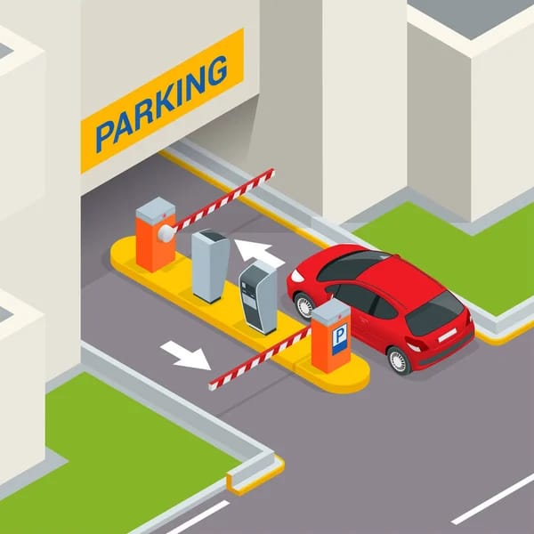

Captura del proyecto 3

Sistema de administración de parqueadero
Sistema para gestionar y controlar un parqueadero. Registra la hora de entrada y salida de los vehículos y los datos del propietario, y calcula automáticamente el valor del servicio según el tipo de vehículo y el tiempo de permanencia.
- Python
- MySQL